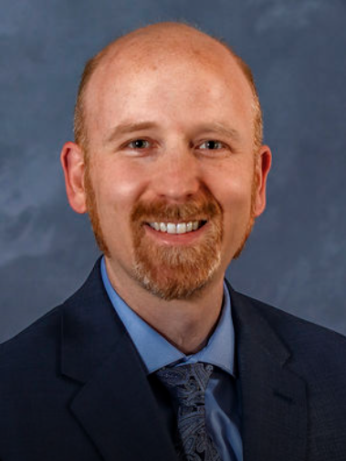

About Me
I’m a medical student at Loma Linda University School of Medicine committed to clinical excellence, community outreach, and patient-centered research. I believe in caring for patients through the lens of love, respect, and responsibility. My journey as a student physician has been shaped by a desire to make others whole—spiritually, mentally, and physically.
Experience Highlights
▶ Resilience Committee Chair
Led Resilience Education, Research Outcomes, and Events subcommittees using LLU student data and national best practices to build a more spiritually grounded and supportive community.
▶ McPherson Research Scientist
Conducted award-winning research on pediatric urology including a 10-year torsion dataset and risk factors for posterior urethral valves.
▶ Ultrasound Interest Group President
Directed the largest interest group at LLUSOM, educating 1000+ students in bedside ultrasound skills applicable across all specialties.
▶ Missions Secretary
Connected peers to global health opportunities under the motto “To Make Man Whole.”
▶ WoundWalk First Aid Provider
Delivered compassionate care to homeless individuals, treating wounds and offering emotional and spiritual support.
Clinical & Global Service
▶ COPE Health Scholars
311 hours across Med-Surg, ER, Cardiac Cath Lab, and L&D. Honored with Exemplary Service Award for professionalism and empathy.
▶ Medical Missions – Peru (Triage)
Served ~1,050 patients over 7 days. First point of patient contact, delivering clear and compassionate intake.
▶ Medical Missions – Nicaragua (Dental)
Assisted with extractions and patient communication in Spanish. Helped coordinate workflow and logistics.
Publications & Awards
▶ Peer-Reviewed Publications
- “Prolactin enhances T Regulatory Cell Promotion…” – Translational Oncology
- “Tumor cell-derived asymmetric dimethylarginine…” – Cancer Cell International
▶ Published Abstracts
- "Predictors of Testis Torsion Viability" – WAFMR 2025 (1st Author, Category Winner)
- "Prenatal Ultrasound Risk Factors for PUV" – WAFMR 2024 (2nd Author)
▶ Key Honors
- Quest for Excellence Award: “A quiet force for wellness and wholeness.”
- Professionalism Commendation: Recognized by LLUSOM faculty for exemplary professionalism.
- WAFMR Subspecialty Award: Best nephrology abstract among student submissions.
- LCME Student Representative: 1 of 12 students to represent LLUSOM to the national accrediting body.
- Summa Cum Laude – UC Riverside: Top 2% of class, GPA ≥ 3.95.
On the Quest for Excellence Award: Dr. Dan Rogstad

"This award celebrates a student who is committed to growth—constantly evaluating, learning, and improving—not only in academics but in life. This student has been a quiet force for wellness and wholeness, both personally and within the student community."